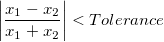

- 
Diese zwei X-Werte werden als Duplikate betrachtet. Der Wert der Toleranz für duplizierte X sollte zwischen (0, 1) liegen.

Diese zwei Y-Werte werden als Duplikate betrachtet. Der Wert der Toleranz für duplizierte Y sollte zwischen (0, 1) liegen.
Auf die Dialoge XYZ-Gridding und XYZ-Log-Gridding können Sie über Worksheet: In Matrix konvertieren: XYZ-Gridding bzw. Worksheet: In Matrix konvertieren: XYZ-Log-Gridding zugreifen. Beide Dialoge haben zwei Bedienfelder: Das linke Bedienfeld enthält Elemente für Parameter, während das rechte Bedienfeld mehrere Registerkarten für die Funktionsvorschau zeigt. Die Einstellungen sind die gleichen.
Es sind eine oder mehrere Z-Spalten im Arbeitsblatt erforderlich. Wenn Sie die Z-Spalte(n) markieren, bevor Sie den Dialog XYZ-Gridding oder XYZ-Log-Gridding öffnen, legt Origin den Bereich entsprechend der Auswahl fest. Sobald der Dialog geöffnet ist, können Sie den Bereich mit den Bedienelementen des Dialogs in Zweig Erweitert verändern.
Wenn mehrere Z-Spalten festgelegt sind, wird jede Z-Spalte in ein Matrixobjekt des gleichen Matrixblatts umgewandelt.
Mehrere Z-Werte, die den gleichen XY-Paaren entsprechen, sind nicht zugelassen. Diese drei Bedienelemente werden verwendet, um zu bestimmen, ob (a) zwei XY-Paare als der gleiche Punkt behandelt und (b) wie mit solchen duplizierten Paaren verbundene Z-Werte bearbeitet werden sollten.
| Toleranz für duplizierte X |
Legen Sie die Toleranz fest, die verwendet wird, um duplizierte X-Koordinatendaten zu erkennen. Für zwei nebeneinander liegende Punkte (x1, y1,z1) und (x2, y2, z2), wenn
Diese zwei X-Werte werden als Duplikate betrachtet. Der Wert der Toleranz für duplizierte X sollte zwischen (0, 1) liegen. |
|---|---|
| Toleranz für duplizierte Y |
Legen Sie die Toleranz fest, die verwendet wird, um duplizierte Y-Koordinatendaten zu erkennen. Für zwei nebeneinander liegende Punkte (x1, y1,z1) und (x2, y2, z2), wenn
Diese zwei Y-Werte werden als Duplikate betrachtet. Der Wert der Toleranz für duplizierte Y sollte zwischen (0, 1) liegen. |
| Duplikate ersetzen mit | Wenn zwei Z-Werte den gleichen XY-Datenpaaren entsprechen (Toleranzen sind berücksichtigt), sollten diese Z-Werte in einem neuen Wert zusammengefügt werden. Verwenden Sie diese Auswahlliste, um den neuen Wert festzulegen: Das kann Mittelwert, Median, Maximum, Minimum oder Summe sein. |
Nach der Bearbeitung der duplizierten XY-Paardaten wird untersucht, ob die Daten äquidistant verteilt sind. Es gibt zwei Bedienelemente, die verwendet werden, um zu untersuchen, ob die Daten sowohl in X- als auch in Y-Dimension äquidistant verteilt sind.
| Toleranz für äquidistante X-Stufe |
Legen Sie die Toleranz fest, die zum Untersuchen der Äquidistanz der X-Daten verwendet wird. Für zwei nebeneinander liegende Punkte (xi, yi, zi) und (xi+1, yi+1, zi+1), wenn oder wobei Ix das durchschnittliche Intervall zwischen X-Daten ist. Diese X-Daten werden als äquidistant betrachtet. Der Wert der Toleranz für äquidistante X-Stufe sollte zwischen (0, 1) liegen. |
|---|---|
| Toleranz für äquidistante Y-Stufe |
Legen Sie die Toleranz fest, die zum Untersuchen der Äquidistanz der Y-Daten verwendet wird. Für zwei nebeneinander liegende Punkte (xi, yi, zi) und (xi+1, yi+1, zi+1), wenn oder wobei Iy das durchschnittliche Intervall zwischen Y-Daten ist. Diese Y-Daten werden als äquidistant betrachtet. Der Wert der Toleranz für äquidistante Y-Stufe sollte zwischen (0, 1) liegen. |
|
Nur wenn die Daten als äquidistant verteilt betrachtet werden, können die Optionen Regulär und Dünn in der Auswahlliste Griddingmethode und Parameter ausgewählt werden. Wenn nicht, können Sie eine der Interpolationsmethoden testen oder versuchen, die Toleranzen für Duplikate und äquidistante Stufen zu erhöhen. |
Wählen Sie die Griddingmethoden und konfigurieren Sie die Griddingparameter. Beachten Sie, dass die Bedienelemente je nach Griddingmethode variieren.
| Griddingmethoden und Parameter |
Legen Sie die Griddingmethode fest. |
|---|---|
| Spalten |
Festlegen der Spaltenanzahl der Ausgabematrix |
| Zeilen |
Festlegen der Zeilenanzahl der Ausgabematrix |
|
Quadratischer interpolierter lokaler Faktor
(q) |
Diese Option ist nur verfügbar, wenn Interpolation nach Shepard in der Auswahlliste Griddingmethoden und Parameter ausgewählt ist. Verwenden Sie den quadratischen interpolierenden lokalen Faktor (q), um den Einflussradius der lokalen approximativen quadratischen Anpassungsfunktion für jeden Knoten zu berechnen, wenn die Methode Interpolation nach Shepard Gridding verwendet wird. Standardmäßig ist q = 18. Für die besten Ergebnisse sollte q ungefähr gleich 2w und w größer als 0 sein. Das Modifizieren dieser Faktoren kann die Genauigkeit des Gridding steigern, obwohl sich die Berechnungszeit für größere Werte beträchtlich erhöht (d.h. Werte, die die Lokalität der Methode verringern.) |
|
Lokaler Faktor der Gewichtungsfunktion
(w) |
Diese Option ist nur verfügbar, wenn Interpolation nach Shepard in der Auswahlliste Griddingmethoden und Parameter ausgewählt ist. Verwenden Sie sie, um den Lokalitätsfaktor der Gewichtungsfunktion w festzulegen, der zum Berechnen des Gewichtungsradius' für jeden Knoten verwendet wird. Standardmäßig ist w = 9. Für die besten Ergebnisse sollte q ungefähr gleich 2w und w größer als 0 sein. Das Modifizieren dieser Faktoren kann die Genauigkeit des Gridding steigern, obwohl sich die Berechnungszeit für größere Werte beträchtlich erhöht (d.h. Werte, die die Lokalität der Methode verringern.) |
| Glättung |
Diese Option ist nur verfügbar, wenn entweder Interpolation nach Thin Plate Spline oder Interpolation nach Kriging Korrelation in der Auswahlliste Griddingmethode und Parameter ausgewählt ist. Dieser nicht negative Wert legt den Umfang fest, in dem die Gridding-Oberfläche von den Eingabedatenpunkte abweicht. Wenn der Glättungsfaktor Null ist, wird keine Glättung durchgeführt und die Datenpunkte liegen alle auf der interpolierten Oberfläche. Ein positiver Glättungsfaktor glättet die Oberfläche. Ein Faktor jedoch, der zu groß ist, verschleiert die Originaldaten. |
| Extrapolation |
Diese Option ist nur verfügbar, wenn Interpolation nach Thin Plate Spline in der Auswahlliste Griddingmethoden und Parameter ausgewählt ist. Einzelheiten lesen Sie bitte in der Beschreibung des Algorithmus' nach. |
| Suchradius |
Diese Option ist nur verfügbar, wenn entweder Interpolation nach Gewichteter Durchschnitt oder Interpolation nach Kriging Korrelation in der Auswahlliste Griddingmethode und Parameter ausgewählt ist. Einzelheiten lesen Sie bitte in der Beschreibung des Algorithmus' nach. |
| Minimumpunkte |
Diese Option ist nur verfügbar, wenn Interpolation nach Kriging Korrelation in der Auswahlliste Griddingmethoden und Parameter ausgewählt ist. Einzelheiten lesen Sie bitte in der Beschreibung des Algorithmus' nach. |
Erweiterte Optionen für Griddingbereiche und Matrixkoordinaten
| Bereichseinschränkung |
Legen Sie die Grenze des Eingabedatenbereichs fest. Standardmäßig sind alle Datenpunkte eingeschlossen. Um schlechte oder unerwünschte Datenpunkte auszuschließen, können Sie den Eingabedatenbereich einschränken, indem Sie das Minimum und Maximum der XY-Koordinaten bearbeiten (Hinweis: Sie können unerwünschte Daten auch mit Hilfe der Bedienelemente auf der Registerkarte XY-Bereich im unteren Vorschaufeld grafisch maskieren).
|
|---|
Dieses Kontrollkästchen wird für die Optionen der Griddingmethoden und Parameter gezeigt außer Regulär oder Dünn. Dieses Kontrollkästchen ist standardmäßig deaktiviert.
Das Aktivieren dieses Kontrollkästchens hat zur Folge, dass Gitternetzpunkte außerhalb der Datengrenze (bestimmt durch die Triangulation der Eingabepunkte) wie fehlende Werte behandelt werden. Mit Erhöhen der Anzahl der Spalten und Zeilen (unter Griddingmethoden und Parameter) nähern sich die äußersten Gitternetzpunkte der wahren Datengrenze.
Diese Option verwendet den Algorithmus der Funktion Gitternetz aus XYZ-Konturdiagramm erzeugen.
Steuern des Diagrammtyps, der auf der Registerkarte Vorschauergebnis angezeigt wird:
Legt fest, ob und wie die Gridding-Daten ausgegeben werden:
Legt fest, dass die Griddingdaten als Matrix ausgegeben werden.
Legt fest, dass die Gridding-Daten in einem Arbeitsblatt, das als virtuelle Matrix angeordnet ist, ausgegeben wird. Wenn mehrere Z-Spalten als Eingabe festgelegt sind, wird die virtuelle Matrix nicht unterstützt.
Dieses Bedienfeld bietet verschiedene Vorschauoptionen.
| XY-Bereich |
Das Diagramm auf der Registerkarte XY-Bereich bietet eine 2D-Ansicht Ihrer XY-Koordinatendaten. |
|---|---|
| X/Y-Schritte |
Die Verteilung der Schritte in X- oder Y-Koordinaten. Da die Zeilen und Spalten des Gridding mit dem X-Schritt und Y-Schritt verbunden sind, ändert sich der Wert synchron, wenn Sie einen von diesen Schritten bearbeiten. |
| Vorschauergebnis |
Vorschau des Griddingergebnisses Der Diagrammtyp der Vorschau wird von der Listenauswahl der Vorschau des Diagrammtyps bestimmt. Beachten Sie, dass die Anzeige des Vorschaudiagramms bei sehr großen Datensätzen langsam sein könnte. |